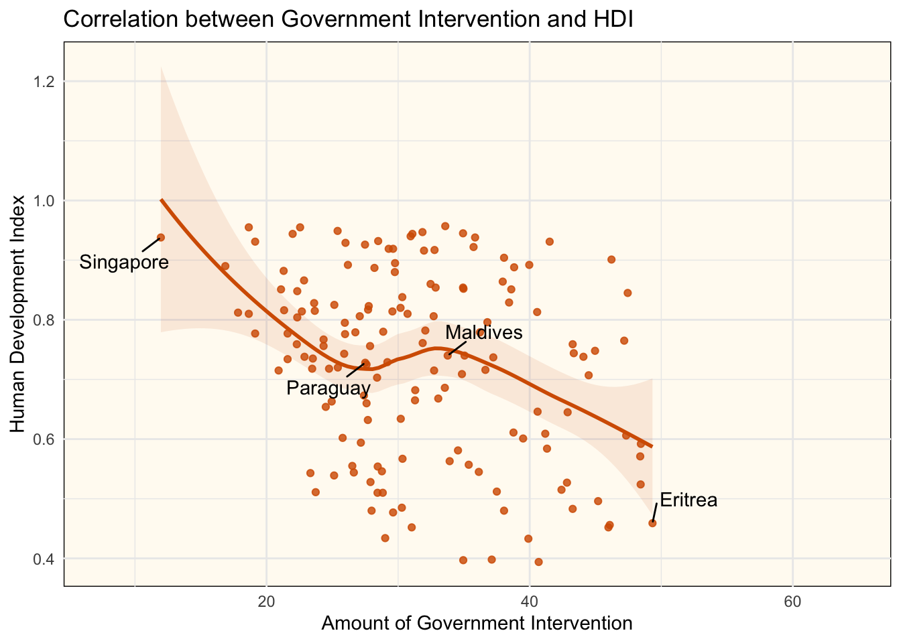
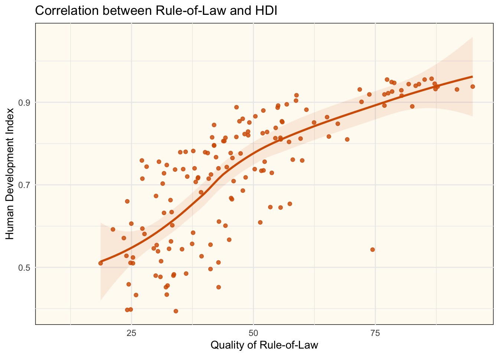
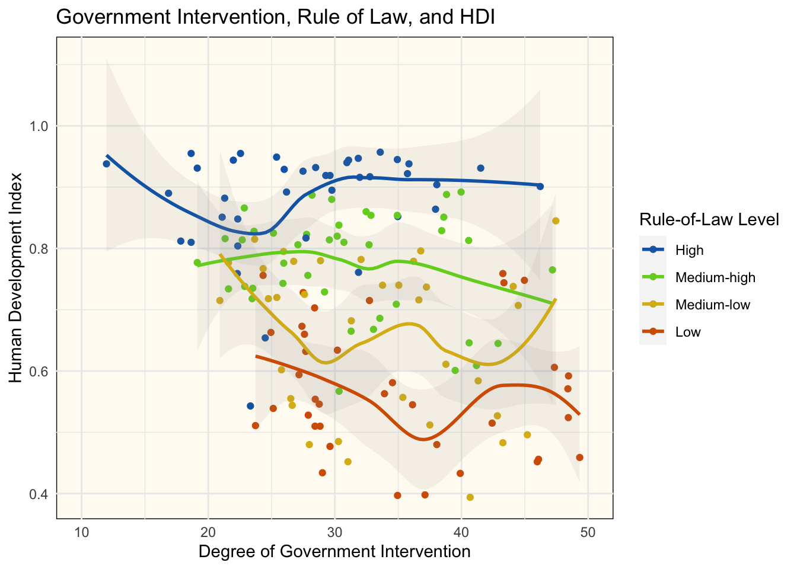

library(tidyverse)
library(janitor)
library(ggthemes)Effect of Government Intervention on Citizen Wellbeing
Data Visualization (STAT 302)
Introduction
Purpose
The purpose of this data visualization project is to study how the amount of government intervention affects the everyday citizens of the country. Here, we use several variables within Economic Freedom Index to represent the amount of government intervention, and we use the Human Development Index to denote the wellbeing of the citizens.
Question
How will the degree of government intervention in a nation’s economy affect its citizens’ overall wellbeing?
Hypothesis
The very high end of government intervention correlates with a low HDI, as it hinders economic growth
At the middle of the government intervention spectrum, there will be more mixed results, considering that governments intervene in different ways. Countries with better rule of law will generally have better HDI
At the low end of government intervention, the HDI will be lowered again due to absence of certain crucial interventions, but with a higher ceiling compared to HDI at the high end of intervention. In addition, better rule of law will tend to correlate with higher HDI.
Data Used
The sources I will use for this data is the Economic Freedom Index and the Human Development Index. More specifically, I want to look at how the government intervention, shown in the “Government Size” and “Regulatory Efficiency” sub-indices, affect a country’s Human Development Index.
Limitations
One limitation of this project is that it can only show correlation, not causation. Any statistically significant findings must be followed up with further research outside of these datasets.
In addition, the two indices involved are only a very general overview of the complex factors that belies it. While this research is intended to show how the degree government intervention affects its citizens’ wellbeing, it can in no way make recommendations for the ideal form of government intervention.
Preparation
Loading Packages
Importing Data
# Import Economic Freedom Index
efi <- read_csv(file = 'data/economic_freedom.csv',
col_types = cols(`Property Rights` = col_number(),
`Judical Effectiveness` = col_number(),
`Government Integrity` = col_number(),
`Tax Burden` = col_number(),
`Gov't Spending` = col_number(),
`Fiscal Health` = col_number(),
`Business Freedom` = col_number(),
`Labor Freedom` = col_number(),
`Monetary Freedom` = col_number())) %>%
clean_names()
# Import Human Development Index
hdi <- read_csv(file= 'data/hdi.csv',
col_types = cols(`2019` = col_number())) %>%
clean_names()Combining and Wrangling Datasets
# Get the HDI from 2019 only
hdi_2019 <- hdi %>%
mutate(
hdi = x2019
) %>%
# remove all the year data (which contains "x" in their variable name)
select(-contains('x'))
# Rewrite the values of N/A into NA so they can be removed later
efi[efi == 'N/A'] <- NA
# Create new variables out of old ones
efi_wrangled <- na.omit(efi) %>%
mutate(
# Averaging of three variables to make rule of law
rule_of_law = (property_rights +
judical_effectiveness +
government_integrity) / 3,
# Averaging of six variables produces the amount of freedom related to
# government intervention
# 100 minus that freedom is degree of government intervention
gov_intervention = 100 -
(tax_burden +
govt_spending +
fiscal_health +
business_freedom +
labor_freedom +
monetary_freedom) / 6
)
# Combine dataset of the EFI and HDI, drop unnecessary columns
combined <- efi_wrangled %>%
mutate(
efi = x2019_score
) %>%
left_join(
hdi_2019,
by = c('country_name' = 'country')
) %>%
# Simplify the graph by dropping unnecessary or redundant columns
select((-c('country_id',
'webname',
'region',
'world_rank',
'region_rank',
'x2019_score',
'country')))Plotting and Analysis
Graph 1
The purpose of this graph is to see if there are correlation between the level of government intervention and HDI
# Mark a few points to label
country_to_label <- c('Singapore',
'Paraguay',
'Maldives',
'Eritrea')
data_to_label <- combined %>%
filter(country_name %in% country_to_label)
# Actual plot
ggplot(
data = combined,
mapping = aes(x = gov_intervention, y = hdi)) +
geom_point(
color = '#d55e00d0'
) +
geom_smooth(
method = 'loess',
alpha = 0.1,
color = '#d55e00',
fill = '#d55e00') +
ggrepel::geom_text_repel(
data = data_to_label,
color = 'black',
nudge_x = 0,
mapping = aes(label = country_name,
font = 'serif'
),
show.legend = FALSE,
box.padding = 0.6,
seed = 9876
) +
labs(
title = 'Correlation between Government Intervention and HDI',
x = 'Amount of Government Intervention',
y = 'Human Development Index'
) +
theme_minimal() +
theme(
panel.background = element_rect(fill = '#fffbf2')
)
Analysis
From the Loess regression, we can see that as the degree of government intervention goes up, the HDI tends to go down. One interesting observation is that between the government intervention value of 28 and 33, HDI increased with an increase in government intervention.
When the government intervention level is above 28, around the equivalent of Paraguay, we can see a pattern that aligns with our hypothesis: increased government intervention generally correlates with a better HDI, but only to a certain extent; after it got over the threshold of 33, which is around the level for Maldives, HDI starts decreasing again as government intervention increases.
However, the part not predicted by the hypothesis is those whose government intervenes less than the level of 28. There, as intervention decreases, HDI generally increases.
Graph 2
The purpose of this graph is to see if there are correlation between rule-of-law and HDI
# Actual plot
ggplot(
data = combined,
mapping = aes(x = rule_of_law, y = hdi)) +
geom_point(
color = '#d55e00d0'
) +
geom_smooth(
method = 'loess',
alpha = 0.1,
color = '#d55e00',
fill = '#d55e00') +
labs(
title = 'Correlation between Rule-of-Law and HDI',
x = 'Quality of Rule-of-Law',
y = 'Human Development Index'
) +
theme_minimal() +
theme(
panel.background = element_rect(fill = '#fffbf2')
)
Analysis
As we can see from the Loess regression, better rule-of-law tends to correlate with higher HDI.
Graph 3:
The purpose of this graph is to visualize the correlation between government intervention and HDI, for different rule of law levels.
I separated the countries into four quartiles based on their rule of law score, and plotted them on the same graph.
rule_of_law_data <- combined %>%
mutate(
rol_lvl = case_when(
rule_of_law < 33.3 ~ 'Low',
rule_of_law >= 33.3 & rule_of_law <= 43 ~ 'Medium-low',
rule_of_law >= 43 & rule_of_law <= 55.9 ~ 'Medium-high',
rule_of_law > 55.9 ~ 'High'
)
) %>%
select(
'country_name',
'hdi',
'gov_intervention',
'rol_lvl')
rule_of_law_data$rol_lvl <- factor(rule_of_law_data$rol_lvl, levels = c('High', 'Medium-high', 'Medium-low', 'Low'))
ggplot(
data = rule_of_law_data,
mapping = aes(
x = gov_intervention,
y = hdi,
color = rol_lvl)
) +
geom_point() +
xlim(10, 50) +
geom_smooth(
data = rule_of_law_data,
mapping = aes(
x = gov_intervention,
y = hdi,
color = rol_lvl,
),
method = 'loess',
alpha = 0.1) +
scale_fill_manual(values = c('#1268b3d0',
'#73d126d0',
'#dbb818d0',
'#d55e00d0')) +
scale_color_manual(values = c('#1268b3',
'#73d126',
'#dbb818',
'#d55e00')) +
labs(
title = 'Government Intervention, Rule of Law, and HDI',
color = 'Rule-of-Law Level',
x = 'Degree of Government Intervention',
y = 'Human Development Index'
) +
theme_minimal() +
theme(
panel.background = element_rect(fill = '#fffbf2')
)
Analysis
As Graph 2 shows, higher rule of law generally correlates with higher HDI, which is also what this graph conveys. In addition, this graph also showed how HDI corrlates with government intervention, stratified by different levels of rule of law.
Countries in the top quartile of rule of law does not appear to have its HDI strongly affected by government intervention. The other three quartile appears to have a slight negative correlation between government intervention and HDI. The difference seems more pronounced at countries with lower rule of law.
Findings
Overall, it sppears that in terms of economic freedom, a country’s rule of law has major correlations with its citizens’ wellbeing. The level of government intervention plays less roles when adjusted for rule of law level. The fact that Graph 2 shows more government intervention causing less HDI may be due to the fact that countries with less rule of law tends to have higher government intervention.
One thing to note is that at the highest quartile of rule of law, citizens’ wellbeing seem less affected by the degree of government intervention. As rule of law decreases, the effects of intervention on HDI appears higher, but not by enough to be statistically significant.
These findings generally do not support the hypothesis that there is an ideal level of government intervention for citizens’ wellbeing. In addition, the very high end of government intervention does not necessarily mean low wellbeing. However, it does support the statement that a high quality of rule of law tends to correlate with a higher HDI.